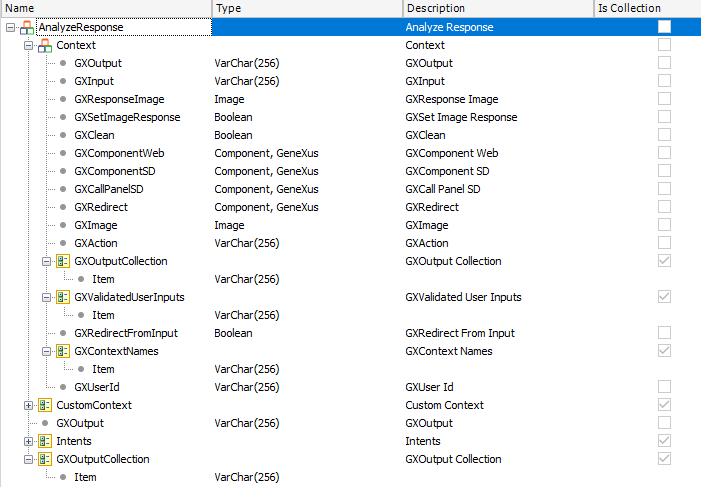

The Message API allows sending and receiving a message from the Provider (keeping track of the context, and triggering the execution of the flow). These are methods of the Chatbot Module. 1. Analyzing a messageTo evaluate an expression in the Provider, the Chatbot.Message.Analyze method is used. Its signature is as follows: parm(in:&Instance, in:&UserMessage, inout:&AnalyzeResponse, out:&Messages) where
Example&Instance = !"Citizen" &UserMessage = !"Hello" Chatbot.Message.Analyze(&Instance, &UserMessage, &AnalyzeResponse, &Messages) &BotResponse = &AnalyzeResponse.GXOutputCollection.toJson() (2) &Intent = &AnalyzeResponse.Intents.Item(1).Intent &Confidence = &AnalyzeResponse.Intents.Item(1).Confidence 2. Sending a message and triggering the execution of the flowThe purpose of this method is to analyze the expression (the user's message) and, additionally, execute the business logic defined for that Flow. That is, do the redirections(1) defined for the flow, execute the user input validations, and the Conversational Object. Its signature is as follows: parm(in:&Instance, in:&UserMessage, in:&Image, inout:&AnalyzeResponse, out:&Messages) where
Examples1. The PanelChatWeb and PanelChatSD objects, which are resources of the Chatbot Generator, are examples which call (indirectly) the Chatbot.Message.SendMessage method. They invoke the CommonChatbots.SendMessage procedure, which calls the Chatbot.Message.SendMessage. 2. Another interesting use of this API is to build a test case of your chatbot. You can program, in batch mode, the dialog to the Provider and check the responses. The Chatbot Context will be kept in track as the &AnalyzeResponse parameter which contains the context (among other information) is inout.
&Instance = !"Citizen"
&UserMessage = !"Hi"
do "ProcessMessageSend"
&UserMessage = !"I'd like to make a complaint"
do "ProcessMessageSend"
&UserMessage = !"About traffic"
do "ProcessMessageSend"
&UserMessage = !"There's a car parked in front of a garage"
do "ProcessMessageSend"
Sub "ProcessMessageSend"
msg(format(!"User: %1",&UserMessage), status)
Chatbot.Message.SendMessage(&Instance,&UserMessage,&Image,&AnalyzeResponse,&Messages)
msg(format(!"Bot: %1", &AnalyzeResponse.GXOutput), status)
if &Messages.Count > 0
msg(format(!"%1 (%2)",&Messages.Item(1).Description,&Messages.Item(1).Id), status)
endif
EndSub
The output of running this test procedure would be as follows: User: Hi Analyze Response structure Context: Substructure that contains the definition of the standard parameters for the context. Notes(1) Depends on the case, if the redirections are server side, it is necessary to use the SendMessage method (case of DialogFlow), if the redirections are provider side (case of Watson), the Analyze method can be used to execute the redirections. (2) GXOutputCollection is useful when it comes with multiple answers. GXOutput has the last message, but in a case of redirection for example, the bot has two answers and GXOutputCollection has both. AvailabilitySince GeneXus 16 upgrade 4 |
| Backlinks | |
| Toc:Chatbots in GeneXus | HowTo: Send a message to the chatbot from a menu |